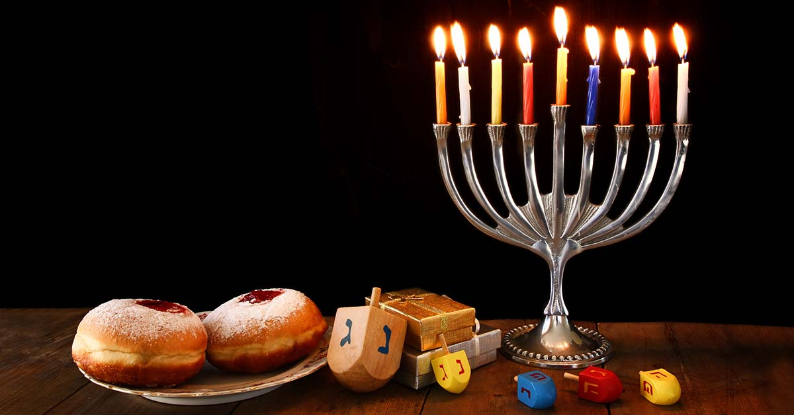
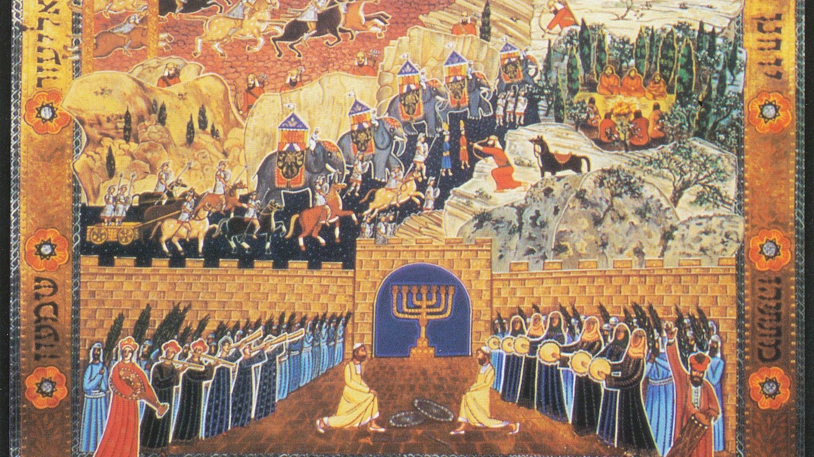
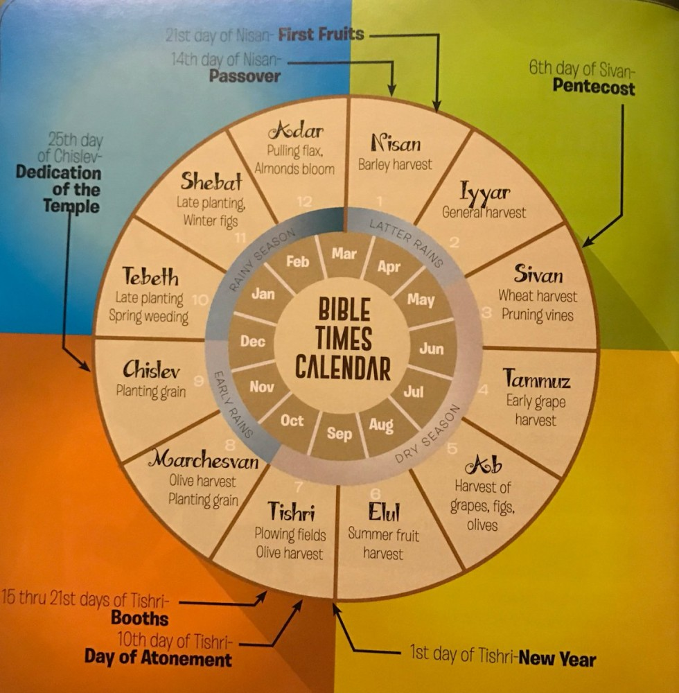
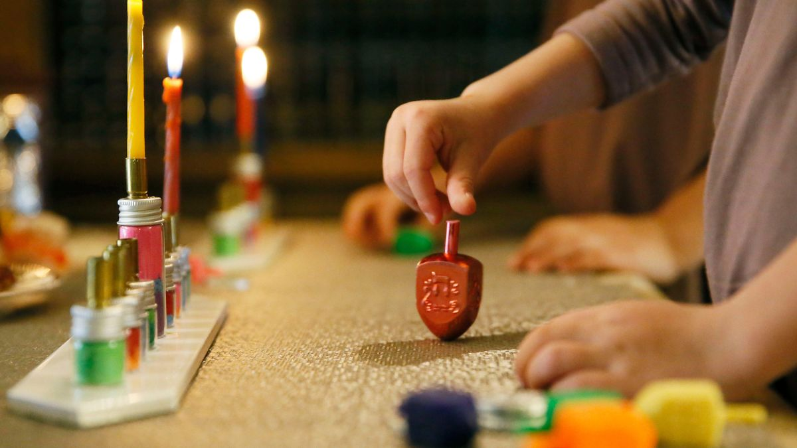
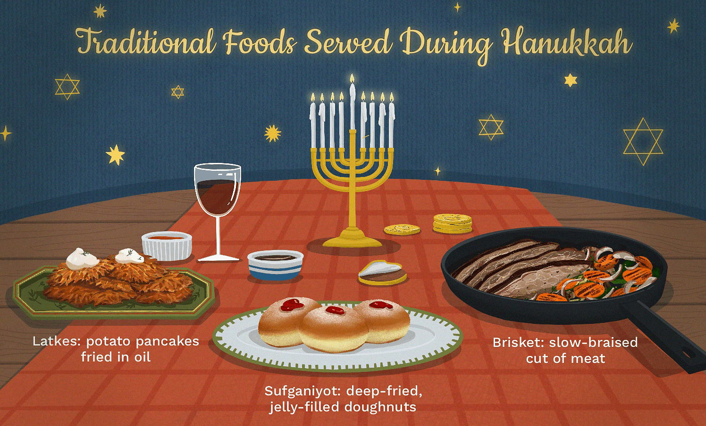

Introduction
Hanukkah, is Hebrew for “dedication,” is the Festival of Lights.
Although Hanukkah is not mentioned in the Bible, it commemorates the victory of the Maccabees over the Syrian army, and the miracle of rededicating the Holy Temple in Jerusalem and restoring its menorah, or lamp.
The miracle of Hanukkah is that only one vial of oil was found with just enough oil to illuminate the Temple lamp for one day, and yet it lasted for eight full days.

History
The story of how Hanukkah came to be is contained in the books of 1 and 2 Maccabees, which are not part of the Jewish canon of the Hebrew Bible.
These books tell the story of the Maccabees, a small band of Jewish fighters who liberated the Land of Israel from the Syrian Greeks who occupied it. Under the reign of Antiochus IV Epiphanes, the Syrian Greeks sought to impose their
Hellenistic
culture, which many Jews found attractive. By 167 B.C.E, Antiochus intensified his campaign by defiling the Temple in Jerusalem and banning Jewish practice. The Maccabees — led by the five sons of the priest Mattathias, especially Judah — waged
a
three-year campaign that culminated in the cleaning and rededication of the Temple.
Since they were unable to celebrate the holiday of Sukkot at its proper time in early autumn, the victorious Maccabees decided that Sukkot should be celebrated once they rededicated the Temple, which they did on the 25th of the month of Kislev
in
the year 164 B.C.E. Since Sukkot lasts seven days, this became the timeframe adopted for Hanukkah.

Why is Hanukkah early in 2021?
In 2021, Hanukkah will begin on Sunday, Nov. 28, at the tail end of the Thanksgiving weekend, and conclude on Dec. 6, nearly three full weeks before Christmas.
However, the exact date of Hanukkah always fluctuates from year to year due to discrepancies between the Hebrew and the Gregorian calendars. The latter calendar year is based on the 365 days it takes the earth to orbit the sun, while the Hebrew
calendar year is based on the 354 days it takes for the moon to go through 12 complete cycles of roughly 29.5 days each.

How to celebrate Hanukkah
We celebrate Hanukkah at home by lighting the menorah (each night we light one additional candle to the number from the previous night), playing dreidel, and eating special foods unique to Hanukkah. Some people also sing Hanukkah songs or
exchange gifts after lighting the menorah, which is also called a hanukkah. Many people host and attend Hanukkah parties.

Popular Hanukkah foods
Many Hanukkah foods are deep-fried in oil, symbolizing the oil from the menorah used in the Temple. These include latkes, or potato pancakes, and jelly doughnuts.
Other favorites include the Sephardic delicacy bimuelos(dough fritters) and use, of course, applesauce as a latke topping.
Chocolate gelt, a candy that gets its name from the Yiddish word for money, is another popular Hanukkah treat.